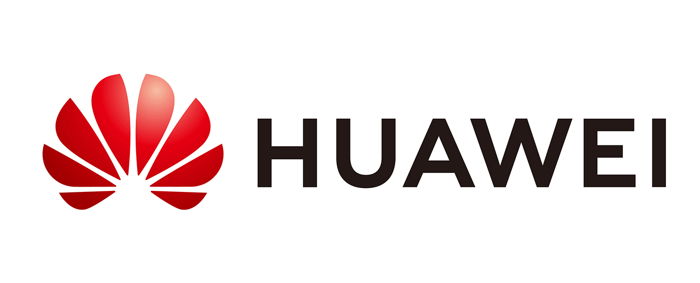
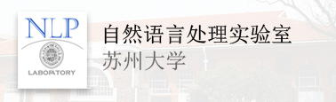

Tongyue SHI | 史童月
KEEPING OUR MISSION FIRMLY IN MIND |
|

Biography
I’m an undergraduate student majoring in Computer Science and Technology (Artificial Intelligence) in Soochow University. My research interest lies on AI for Natural Language Processing (NLP), Computer Vision (CV), Business Big Data Analysis, etc.
Master language programming and algorithms such as Python, C, C++, Java, Matlab, JavaScript, and pass computer CCF-CSP certification; familiar with deep learning natural language processing, computer vision related models, and use of deep learning frameworks such as PyTorch and TensorFlow; master web development Work with the production of WeChat mini programs and the editing and operation of WeChat official accounts; master the use of advanced office, picture, and video processing software; have English listening, speaking, reading and writing skills, pass the CET Band 4 and 6; master data processing and big data analysis skills , Familiar with market research, obtained the National Market Research and Analysis Professional Skills Certificate; participated in many academic research, innovation and entrepreneurship projects and competitions such as the National College Student Mathematical Modeling Contest, Internet+, Challenge Cup, etc. I obtained a number of patents and software copyrights; Multi-volunteer, student activity organization participation and management planning experience.
I'm a contributor of Zhihu and CSDN, and I usually pay attention to some cutting-edge technologies and share knowledge on my personal web page. Welcome to follow my Zhihu account and communicate with me. Besides, I am happy to make new friends, you may contact with your personal introduction.
News
- [12/2021] I’m very happy to participate in the exchange program at Harvard University.✊ Our co-tutor Professor Peter Vaughan Henstock and course assistant Jonathan Zhang are very dedicated and responsible. Through such a short time of communication, our basic knowledge of artificial intelligence and the level of English have been greatly improved.
- [12/2021] As a contributor, I participated in the HUAWEI Ascend All-Wisdom Project (华为昇腾众智计划), and completed the infering work of the Cascade-RCNN-Resnet101-FPN-DCN model, which was successfully concluded. I am so happy to be supervsied by Prof. Li! 💪
- [10/2021] I was awarded the 2020-2021 National Scholarship (国家奖学金) for Undergraduatesbecause of my outstanding academic performance, social practice, innovation ability, and comprehensive quality. I am very happy that the previous efforts have been recognized, and I will continue to cheer in the future! 🎉
- [05/2021] I joined the Natural Language Processing Lab of Soochow University (Soochow NLP Lab) to conduct undergraduate research, it is my great honour to be supervised by Prof. Wang! 😋
- [07/2020] In the spring of 2020, a sudden outbreak of new coronavirus pneumonia swept the world. I performed outstandingly in the great fight against the epidemic, and was rated as an Outstanding Member of the Communist Youth League of Soochow University and the Star of Fighting Epidemic of Soochow University (苏州大学抗疫之星). These are the first time I have won school-level honors in university, and they are also a milestone inspiring me to continue to cheer in the future! ✊
- [09/2019] I was admitted to the medical laboratory technology major of Soochow University Medical Department with excellent grades, but with the yearning for computers since childhood, I chose to join the Artificial Intelligence Experimental Class (AIEX) of Soochow University. This is a test product for the curriculum reform of Soochow University, which continues the glory of China's artificial intelligence by selecting outstanding students. 💪
Education
- Soochow University 2019.09 - 2023.06 Undergraduate Study
- Harvard University 2022.01 - 2022.02 Winter School
Computer Science and Technology (Artificial Intelligence)
Artificial Intelligence and Big Data
Research Experience
- HUAWEI TECHNOLOGIES 2021.09 - 2021.12 Ascend All-Wisdom Project
- Soochow NLP Lab 2021.05 - now Undergraduate Research Intern

Supervisor: Prof. Juntao Li
Topic: Deep learning computer vision model training and infering

Supervisor: Prof. Zhongqin Wang
Topic: Sentiment analysis based on dialogue data
Publications and Patents
2021
-
A kind of deep learning information collection software
Tongyue Shi, Zhongqing Wang and Soochow University.
Software copyright -
A temperature-controllable smart shoe with self-knowledge of cooling and
heating controlled by embedded microcomputer
Tongyue Shi and Min Cao.
Utility model patent -
A computer mainframe chassis cleaning equipment device
Tongyue Shi and Zhongqing Wang.
Utility model patent
Awards
Scholarships 🏆
-
2021, Ministry of Education
-
Special Scholarship for Innovation and Entrepreneurship
2021, Soochow University
-
First-class Scholarship for Study Excellence
2021, Soochow University
-
Special Scholarship for Social Work
2021, Soochow University
-
2021, Soochow University
-
2020, Soochow University
-
First-class Scholarship for Study Excellence
2020, Soochow University
-
2020, Soochow University
-
Special Scholarship for Spiritual Civilization
2020, Soochow University
Competition awards
-
Youth Volunteer Service Charity Entrepreneurship Competition of Soochow University, Third Prize
2021, School-level Competition
-
2021, School-level Competition
-
Contemporary Undergraduate Mathematical Contest in Modeling, Second Prize
2021, National Competition
-
2021, Provincial Competition
-
2021, Provincial Competition
-
2021, National Competition
-
the 18th Higher Mathematics Competition of Jiangsu Provincial Colleges and Universities, Third Prize
2021, Provincial Competition
-
2021, Provincial Competition
-
University Student Knowledge Contest (Science and Engineering Group) in Jiangsu, Excellent Prize
2021, Provincial Competition
-
2021, School-level Competition
-
2021, School-level Competition
-
2021, Provincial Competition
-
Mathematical Contest In Modeling (MCM/ICM), Successful Participant
2021, World-class Competition
-
2021, School-level Competition
-
2021, School-level Competition
-
Advanced Mathematics Competition of Soochow University, Third Prize
2021, School-level Competition
-
"My Hometown Social Practice Story Collection" Contest of Soochow University, Second Prize
2020, School-level Competition
-
National College Student Mathematics Competition (non-mathematics), Third Prize
2020, Provincial Competition
-
National Colleges and Universities Mathematics Ability Challenge Finals, Excellence Award
2020, National Competition
-
the Preliminary Competition of the National College Mathematics Ability Challenge, Excellence Award
2020, Provincial Competition
Sort by award time.
Honorary titles
-
Advanced Individual in Summer Social Practice Activities of Jiangsu Province
2021
-
Advanced Individual in Summer Social Practice Activities of Soochow University
2021
-
Top Ten Young Volunteers of Soochow University in 2020
2021
-
"Outstanding Communist Youth League Cadre" of School of Computer Science and Technology
2021
-
"Outstanding Student Leader" of Soochow University
2020, 2021
-
Nominated for "Jiangsu University Student's Most Beautiful Anti-epidemic Volunteer"
2020
-
"Star of Anti-epidemic" of Soochow University
2020
-
"Excellent Communist Youth League Member" of Soochow University
2020
-
"Advanced Individuals in Epidemic Prevention and Control" of Soochow University
2020
Social Activities
- Commissary in Charge of Publicity 2020.2 - now 2019 Artificial Intelligence Class 2
- Class Assistant 2021.9 - now 2021 Software Engineering Class 2
- Journalist 2021.7 - 2021.9 "School Media Watching Practice" Student Press Team of Soochow University
- Minister 2020.8 - 2021.8 Publicity Center, Student Union of School of Computer Science and Technology
- Minister 2020.7 - 2021.7 Propaganda Department, Soochow University League School
- Key Volunteers 2020.9 - 2020.11 Celebration Organizing Committee, 120th Anniversary of Soochow University
- Propaganda Specialist 2020.7 - 2020.11 School of Computer Science and Technology, Soochow University
- Clerk 2019.9 - 2020.7 Graphic Center, Student Science and Technology Association of Soochow University
- Clerk 2019.9 - 2020.7 New Media Center, Youth Volunteers Association of Soochow University
- Clerk 2019.9 - 2020.7 Propaganda Department, Soochow University League School
- Clerk 2019.9 - 2020.7 Publicity Center, Student Union of School of Computer Science and Technology
- Clerk 2019.9 - 2020.7 Media Department, Youth Media Center of Soochow University Youth League Committee
Skills
- Programming Languages 💻
- Software & Tools 🖥

Python, C, C++, Java, MATLAB
PyTorch, LaTex